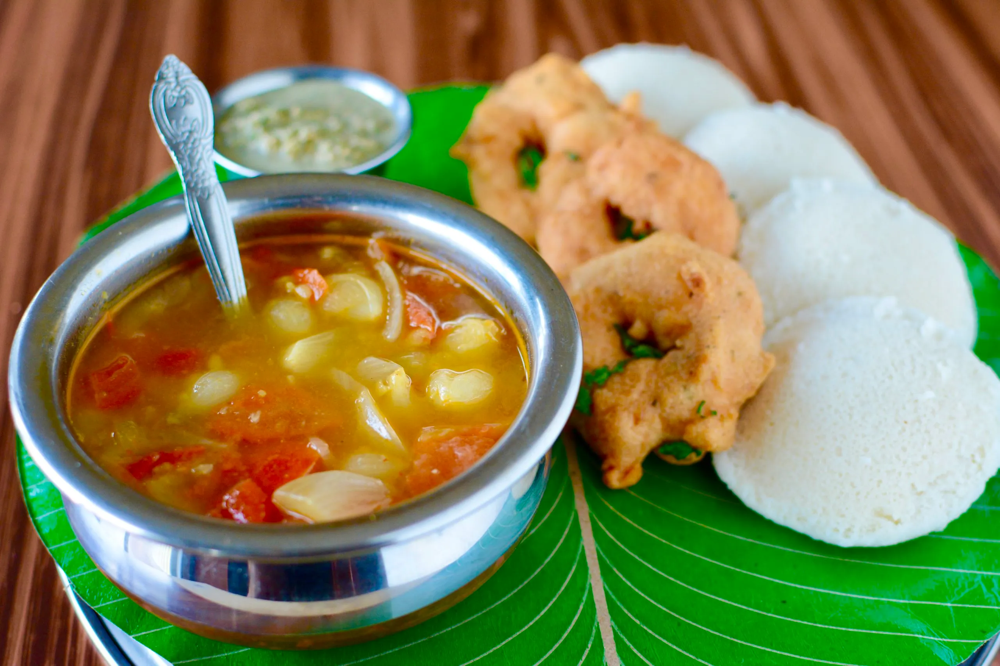

Explore Our Dishes

Ven Pongal
Venn or ven (hot) pongal has been described as a rice and lentil porridge similar to the South Asian staple khichdi.


Idli
Idli is made by steaming batter made from rice and pulses(specifically black lentils),into two to three inches thick patties using a mold.
Dosa
A dosa is a thin, savoury crepe in Indian cuisine made from a fermented batter of ground black gram and rice.